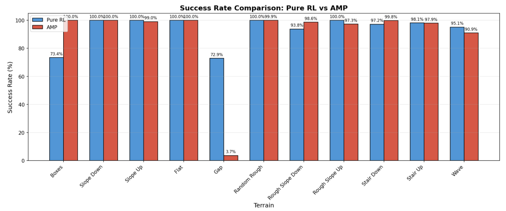
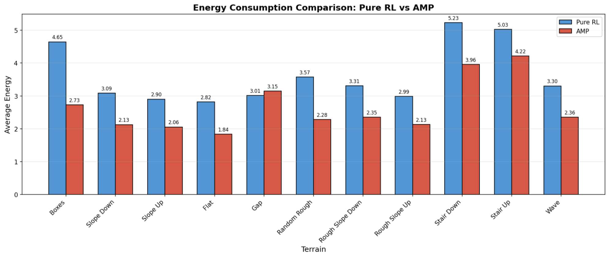
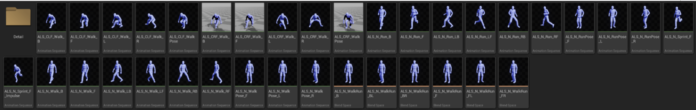
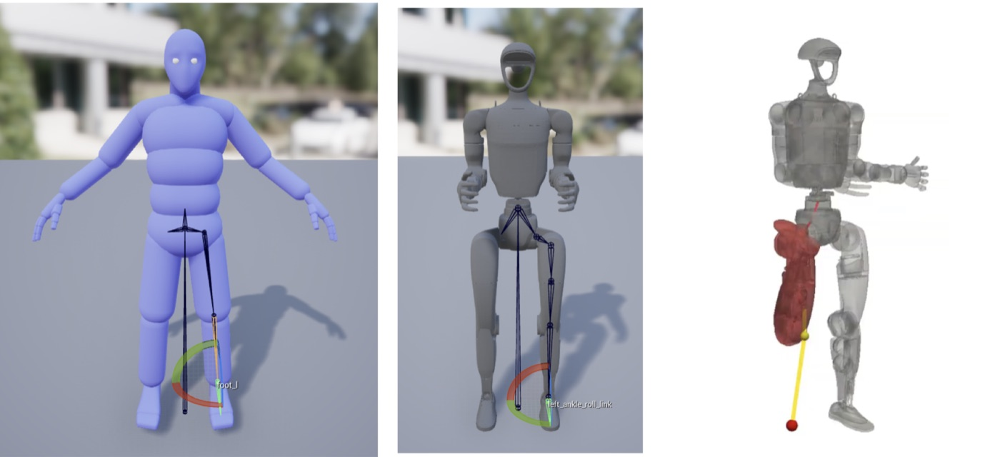
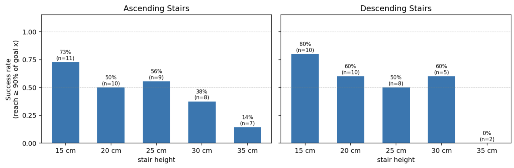

Idea. Instead of reconstructing terrain and human motion from monocular video, drive a Unitree G1 character through realistic Unreal Engine scenes and record (terrain, motion) pairs that are aligned by construction.
TL;DR
AMP matches pure RL on uneven terrain but uses less energy: human motion is worth having.
Video-based data (VideoMimic, CRISP) gets terrain wrong; feet sink into steps.
So we put the G1 into Unreal Engine and generated stair data automatically.
Student: 87.5% on training data, only ~50% on unseen stairs vs. ~94% for Hiking in the Wild. We stopped.
Motivation
Humanoid locomotion on uneven terrain (stairs, ledges, slopes) is mostly tackled by one of the following families, each with its own limitation at the time we started:
Approach
Limitation
Reward-based RL
Rewards must be redesigned and tuned per terrain; the gaits are unnatural (over-bent knees, dragging feet); tall steps and ledges remain hard.
AMP
Imitating a human motion style makes the gait more natural, but the other issues remain and it tends to handle hard terrain worse.
Motion tracking (BeyondMimic, SONIC)
Natural motion with a simple reward, but the training data is almost all flat-ground motion capture with no scene.
Video real-to-sim (VideoMimic, CRISP)
Scene reconstruction and scene-motion alignment from monocular video are inaccurate (feet float or penetrate), retargeting from a different body adds errors, and every terrain needs full-body footage plus heavy processing.
Unreal Engine, on the other hand, has its own physics, and game characters walk over uneven terrain all the time. If we could put a G1 into Unreal, generate maps automatically and build a controller that walks the G1 around by itself, we could generate unlimited uneven-terrain humanoid locomotion data. That was the starting point of this project.
Preliminary study: what does human motion buy us?
To see how far RL alone gets, we trained two policies on a terrain curriculum whose difficulty increases gradually from 0 to 1:
Pure RL: only a "don't fall" reward and regularization rewards.
Pure RL traverses the terrain but keeps its center of mass very low to avoid falling, which looks unnatural. AMP moves much more smoothly, but does not traverse the terrain better than pure RL.

Success rate. Both are close to 100% on most terrains; AMP fails almost entirely on gaps (3.7% vs 72.9%).

Energy consumption. AMP uses clearly less energy on every terrain except gaps.
Human motion is a good reference for using energy efficiently. So what if we collected lots of human motion on uneven terrain and trained a tracking policy on it, like SONIC?
Getting uneven-terrain human motion from video
Two existing works extract human motion together with the terrain from video: VideoMimic and CRISP. We started with VideoMimic as the baseline.
Input videoReconstructed scene + motionReconstructed terrain + G1
VideoMimic. The terrain is not reconstructed accurately and the feet dig into the steps: the result is physically unstable.
CRISP uses a stronger open-source video-to-motion model (GVHMR) and a better depth model (MoGe), so we expected higher quality.
Input videoCRISP reconstruction
CRISP. Thanks to the better depth, stairs are represented much better, but the alignment is still poor: toes still sink into the steps.
Even with better models, extracting terrain and motion from video leaves them misaligned. Do we have to reconstruct them from video at all? What if we started from a world where terrain and motion are aligned by construction?
Idea: put the humanoid into the game engine
Think about video games: characters walk up stairs and over rough ground with ease, and their feet land on the terrain because the engine knows exactly where the terrain is. So instead of extracting terrain and human motion from video, why not put the humanoid directly into a game engine and use its motion as the reference for motion tracking? This also removes retargeting issues: when human and humanoid bodies differ, retargeted motions become physically odd or hard to follow, but a humanoid animated inside the engine has no such gap.
To animate a humanoid in Unreal Engine we need two things:
Base motions that the character plays repeatedly;
A controller that picks the right motion for the terrain at the right moment.
Rather than starting from scratch, we built on Advanced Locomotion System V4 (ALS v4), a free Unreal asset. Its contacts are quite clean, so our first goal was to turn ALS v4 into a Unitree G1 version, reusing its motions and controller.
Advanced Locomotion System V4 running in Unreal Engine.
Base motions: why we retargeted ALS instead of using MoCap
We first tried to find motions similar to the ALS v4 base motions in public MoCap (AMASS). Finding matching motions was hard enough, but there was a more basic problem: Unreal plays motion clips in a loop. A walk cycle that starts on the left foot must return exactly to the same pose, or the transition is visibly jerky. Seamlessly looping clips are almost impossible to find in public datasets, so we decided to retarget the ALS v4 motion assets themselves to the G1.

ALS v4 base motion assets.An Unreal motion clip playing in an infinite loop. It looks natural only because the first and last frames match exactly.
Retargeting ALS v4 to the G1
Convert the ALS v4 mannequin motion into an SMPL body with the mannequin's shape.
Find the SMPL shape parameters of the G1 and swap them into the motion from step 1.
Retarget the G1-shaped SMPL motion directly to the G1.
Retargeted G1 motions.The retargeted motions driven by the ALS controller: the first G1 version of ALS.
Problem: Unreal's IK does not fit the G1
Unreal's built-in IK is not accurate for the G1. It worked for the ALS mannequin because the mannequin's hip and ankle are spherical joints, so each leg has only three joints and the optimized two-bone IK applies. The G1 instead has one joint per degree of freedom, not spherical joints, so using the two-bone IK as-is gives wrong solutions.

Two-bone IK on the mannequin (left) vs. the G1 (middle, right): the G1 leg cannot reach the target correctly.
We replaced it with our own general IK for the G1's kinematic chain.
Results with the custom G1 IK in Unreal.
With this, we created reference motions for ramps and climbing up and trained tracking policies with BeyondMimic. The G1 walks on a range of ramps:
10° ramp20° ramp30° ramp
Tracking Unreal-generated ramp motions.
Stairs: abrupt height changes
On stairs, where the height changes abruptly, the IK breaks down:
joint angles change very sharply as the height changes;
the feet do not land where they should on the steps.
IK failure on stairs with the walk motion.
We tried detecting height changes in front of the G1 and planning a foot trajectory that never passes through the steps. But between our limited Unreal knowledge and a task that was turning into pure engineering rather than research, it took too long. Instead, we recorded dedicated stair-climbing motions so that the G1 climbs naturally.
Captured stair motion.
With Unreal's blend space (given anchor motions, it fills in the space between them by linear interpolation), we can also generate motions beyond the anchor motions:
Stair up (blend space)Stair down (blend space)
Stair motions generated with a blend space.
This still does not remove the choppy feel when the step height changes:
Stair motion on 30 cm-deep steps: transitions are still choppy.
Before vs. after adding stair motions
before walk motion + IK
Unreal referenceTracking in simulation
after dedicated stair motions
Unreal referenceTracking in simulation
With stair motions, the movement becomes more natural.
Stair benchmark
We then checked whether, restricted to stairs, this pipeline beats other baselines.
Terrain generation: randomized spiral and linear staircases with random step width and height.
Automatic data collection with Unreal's auto navigation.
Terrain-aware locomotion (student policy, distilled from 3 with DAgger).
Steps 1–2: procedural stair generation and automatic navigation in Unreal.
~6 h / hmotion data collected per wall-clock hour
94%teacher success (training data)
87.5%student success (training data)
~50%student success on unseen stairs
Teacher: terrain-aware multi-motion tracking
Data: 200 motions on linear staircases with varied step count, width and height. On this training data, the teacher reaches a 94% success rate.
successfailureMost failures are ascending motions where the blend space output drifts far from the anchor motions.
Student: terrain-aware locomotion
The student is distilled from the teacher with DAgger. It only sees the root of the reference motion and the terrain map, so given just a root trajectory it can follow it. On the training data, the student reaches 87.5% success.
successfailure
How well does the student generalize?
Step height
15–35 cm, in 5 cm increments
Step depth
height + 5 cm – 70 cm, in 5 cm increments
Number of steps
6
Success
reaching the final goal

Student success rate on the benchmark. Overall only about 50% (43 / 80 episodes), far below its 87.5% on the training data. Performance drops as steps get taller (ascending 73% → 14%, descending 80% → 0%).
Baseline: Hiking in the Wild
On the same benchmark we trained Hiking in the Wild, an advanced form of AMP. It reaches about 94% success.
Hiking in the Wild on the stair benchmark.
Conclusion
Simple uneven terrain without obstacles is mostly solved by AMP-style methods. Solving it the hard way with Unreal Engine is not efficient.
Unreal Engine has a high ceiling, but reaching it requires high-quality base motions suited to each terrain and a controller that uses the right motion at the right place. That takes a great deal of effort, and authoring animation is engineering work rather than research.